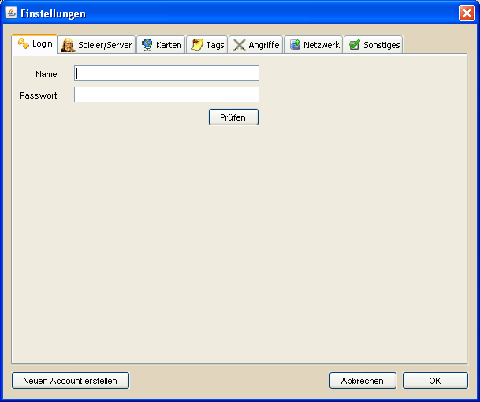

Login |
|
|  | |
| In den Logineinstellungen hat man die Möglichkeit, den Namen und das Passwort seines DS Workbench Accounts anzugeben. Voraussetzung für die Erstellung eines Account und den Login sind korrekte Netzwerkeinstellungen. Der Account dient momentan dazu, die Version der Weltdaten eines Benutzers zu verwalten. Zu einem späteren Zeitpunkt werden mit dem Account weitere Funktionen verbunden sein. Die Logineinstellungen müssen im Normalfall nur einmal beim ersten Start von DS Workbench vorgenommen werden. Hierzu klickt man den Button Neuen Account erstellen an. |
|
 |
|
| In der Accountregistrierung kann man nun einen Accountnamen und ein Accountpasswort angeben. Beides muss mindestens 3 Zeichen lang sein. Sofern das der Fall ist, der Accountname noch nicht von jemand anders registriert wurde und die beiden Passworteingaben übereinstimmen, wird durch einen Klick auf Registrieren der Account erstellt. | |
| Der Account der für DS Workbench erstellt werden muss hat nichts mit dem Account im Spiel zu tun! Es wird dringend empfohlen dafür zu sorgen, dass sich der DS Workbench Benutzername oder zumindest das Passwort von denen im Spiel verwendeten unterscheiden. Weiterhin ist es verboten extremistische oder in irgendeiner Art und Weise menschenverachtende Benutzernamen zu verwenden, da dieser Name zu einem späteren Zeitpunkt euer Erkennungszeichen und stellenweise für andere Nutzer sichtbar sein wird. Die registrierten Benutzernamen werden regelmäßig geprüft und bei Verstoß gegen diese Regel kommentarlos gelöscht. |
|
| Wurde die Registrierung erfolgreich abgeschlossen, werden der Benutzername und das Passwort automatisch in die entsprechenden Felder der Logineinstellungen übernommen. Um sicherzustellen, dass die Eingaben korrekt sind und der Benutzer erfolgreich angelegt wurde, sollte der Account einmal über den Button Prüfen geprüft werden. War dies erfolgreich, wird ein Nachricht darüber informieren. Tritt ein Fehler auf der nicht beseitigt werden kann wendet euch bitte an support@dsworkbench.de Ebenso solltet ihr euch an die oben genannte Adresse richten, wenn ihr mal euer Accountpasswort vergessen habt. Es wird dann zurückgesetzt und ihr könnt es anschließend über den Button Passwort ändern wieder euren Wünschen anpassen. |
|